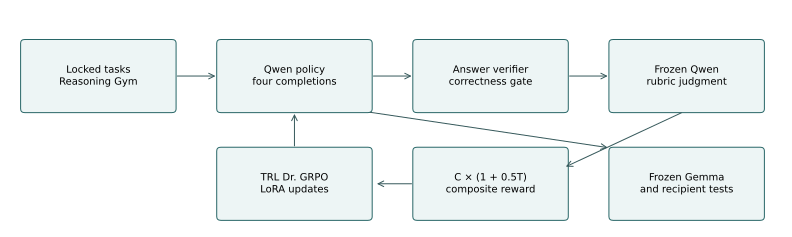

Problem and response
No evaluated outputs yet.
LOCAL MATHEMATICAL LEARNING · OPEN RESEARCH
Testing whether useful structures, valid conceptual novelty and justified connections to distant mathematics improve explanations and transfer, with correctness first.
Missing results are pending. The main score is answer correctness multiplied by supported theory quality. Judge assessments are opinions, not proof certificates.
| Arm | Problems | Accuracy | Correctness × theory | Correctness × novelty | Tokens / answer |
|---|
Published checkpoint snapshot. A local dashboard refreshes automatically.
Correctness and theory use reward-batch indices. Loss and KL use optimizer steps. Fixed score axes run from zero to one.
Examples are the first saved problems by stable task ID, not selected for high scores. Complete records are retained with the experiment artifacts.
No evaluated outputs yet.
Pending.
Wrong or malformed answer: zero. Correct answer: one. Supported, useful theory can add up to one half. Constructive novelty has 20% of rubric weight: new objects, definitions, invariants, frameworks and distant connections must be justified and useful relative to documented conventional approaches. The other criteria assess structure, generality, derivation, reuse and conceptual economy. False theory, cosmetic renaming and unsupported originality claims earn no theory bonus.
Novelty is reference-relative. The additional OOD suite tests graph connectivity, polygon geometry, matrix rank and modular inverses held out from project training. Neither measure establishes historical discovery or absence from model pretraining.

The rising-sea philosophy motivates building definitions and general principles until the original problem becomes a consequence. This rubric is a research interpretation of Grothendieck, not a claim to reproduce his personal judgments.
Historical source: Colin McLarty · Preregistered protocol · Research paper